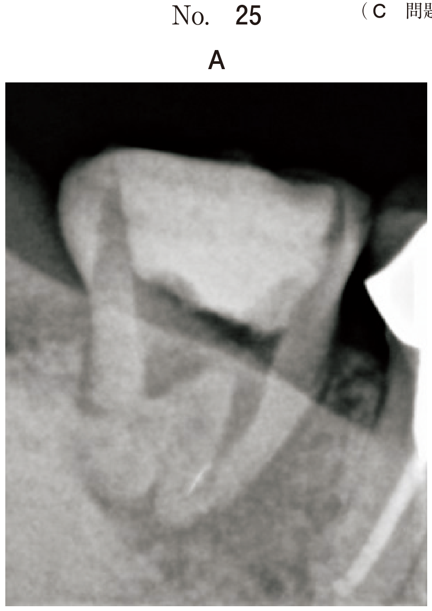
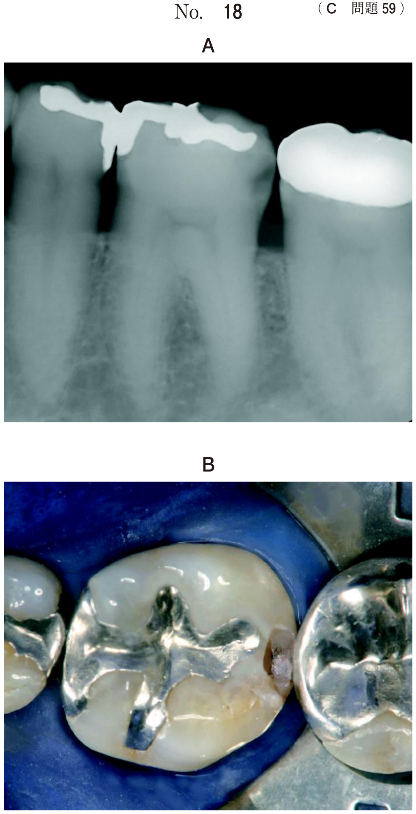

外傷歯の処置
固定の適応（頻出）
固定が必要な外傷
- 側方脱臼
- 咬合痛を伴う亜脱臼
- 垂直性歯根破折
- 歯根中央1/3の破折
- 完全脱臼後の再植
固定が不要な外傷
- 振盪（動揺なし）
- 歯冠破折のみ
- 軽度の亜脱臼（咬合痛なし）
副子（スプリント）の種類
| 副子 | 特徴 |
|---|---|
| 線副子 | ワイヤーとレジンで固定、十分な固定源確保 |
| レジン副子 | レジンのみで固定 |
| 床副子 | 咬合面を被覆、対合歯からの刺激緩和 |
乳歯外傷後の変化（頻出）
| 変化 | 時期・特徴 |
|---|---|
| 歯の変色 | 受傷直後：歯髄内出血が原因 |
| 歯髄腔狭窄 | 受傷後の歯髄反応、予後良好の徴候 |
| 歯髄壊死 | 根完成歯で生じやすい |
歯の変色は必ずしも歯髄壊死を意味しない（経過観察が必要）
外傷後の対応判断
| 状況 | 対応 |
|---|---|
| 歯髄腔狭窄あり・症状なし | 経過観察 |
| 変色のみ・症状なし | 経過観察 |
| 根尖病変・症状あり | 感染根管治療または抜歯 |
| 後継永久歯への影響大 | 抜歯 |
過去問
113C48
3歳児の乳前歯の外傷で固定を行うのはどれか。2つ選べ。
a 振 盪
b 歯冠破折
c 側方脱臼
d 垂直性歯根破折
e 咬合痛を伴う亜脱臼
b 歯冠破折
c 側方脱臼
d 垂直性歯根破折
e 咬合痛を伴う亜脱臼
正解：c, e
【解説】固定が必要なのは側方脱臼と咬合痛を伴う亜脱臼。振盪は動揺がなく固定不要。歯冠破折は固定ではなく修復。垂直性歯根破折は乳歯では固定より抜歯が多い。
107C98
乳歯外傷における変化で正しいのはどれか。1つ選べ。
a 歯の変色は改善しない。
b 歯髄壊死は根未完成歯で生じやすい。
c 変色と歯髄壊死とは80％以上で一致する。
d 歯髄狭窄は受傷後1か月以内に認められる。
e 受傷直後の歯の変色の原因は歯髄内出血である。
b 歯髄壊死は根未完成歯で生じやすい。
c 変色と歯髄壊死とは80％以上で一致する。
d 歯髄狭窄は受傷後1か月以内に認められる。
e 受傷直後の歯の変色の原因は歯髄内出血である。
正解：e
【解説】受傷直後の歯の変色は歯髄内出血が原因。歯髄壊死は根完成歯で生じやすい。変色と歯髄壊死は必ずしも一致しない。歯髄狭窄は数か月後に認められる。
114C78
10歳の男児。上顎左側中切歯部歯肉の腫脹を主訴として来院した。6歳時に転倒し、上顎両側中切歯を受傷したという。2年前からときどき腫れる。初診時の口腔内写真（別冊No.31A）とエックス線画像（別冊No.31B）を別に示す。「Aの所見で正しいのはどれか。1つ選べ。


a 骨性癒着
b 歯根破折
c 歯根彎曲
d 内部吸収
e 歯髄腔狭窄
b 歯根破折
c 歯根彎曲
d 内部吸収
e 歯髄腔狭窄
正解：e
【解説】X線で└Aは根尖病変があり感染根管治療が必要だが、「Aは歯髄腔狭窄が認められ、症状がないため経過観察。歯髄腔狭窄は外傷後の歯髄反応で、予後良好の徴候。
113C76
10歳の女児。経過観察のために来院した。2年前に転倒して上顎左側中切歯が振盪したため、他院で3週間固定したという。2年前からの経過を示すエックス線画像（別冊No.24）を別に示す。適切な対応はどれか。1つ選べ。

a 経過観察
b 歯髄鎮静法
c 生活歯髄切断
d 抜 髄
e 感染根管治療
b 歯髄鎮静法
c 生活歯髄切断
d 抜 髄
e 感染根管治療
正解：a
【解説】X線で歯髄腔狭窄が認められるが、根尖病変なし・症状なしであれば経過観察。歯髄腔狭窄は歯髄の防御反応であり、直ちに歯内療法の適応ではない。